Diş Hekimi Kaan Kıray
Ağız ve Diş Sağlığı Bilgilendirme Rehberi
Koruyucu diş hekimliği, estetik ve restoratif diş hekimliği uygulamaları hakkında bilgilendirme.
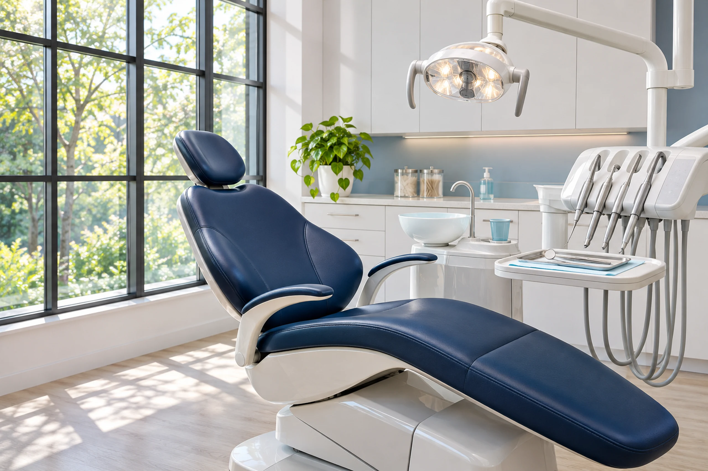
Kaan Kıray
23 Nisan / Şahinbey / Gaziantep
Telefonla bilgi alabilirsiniz.
Ağız ve Diş Sağlığı
Bilgi Alanlarımız
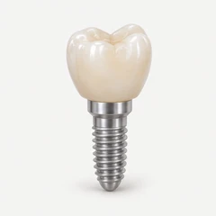
İmplant
Diş implantı, eksik bir dişin yerine planlanan proteze destek olabilen yapay diş köküdür. Diş eksikliğinde köprü ve hareketli protez gibi restoratif seçenekler de ağız içi bulgulara göre değerlendirilebilir.
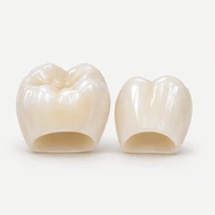
Porselen Kaplamalar
Porselen kaplama, bir dişin görünen bölümünü örten seramik bir restorasyondur. Kalan diş dokusu, kapanış ve diş eti sağlığı planlamayı etkiler.
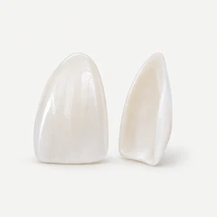
Lamina Uygulamaları
Lamina, dişin ön yüzeyine yerleştirilen ince bir restorasyondur. Diş minesinin durumu ve kapanış ilişkisi uygunluk değerlendirmesinde dikkate alınır.
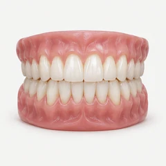
Diş Estetiği
Diş estetiği dişlerin biçimi, rengi ve dizilimiyle ilgili değerlendirmeleri kapsar. Çürük, diş eti sağlığı ve çiğneme işlevi de değerlendirmeye dahildir.
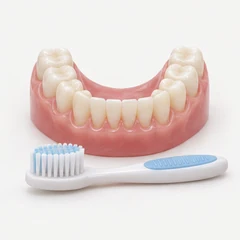
Ağız ve Diş Eti Bakımı
Florürlü diş macunuyla günde iki kez fırçalama ve diş aralarının düzenli temizliği ağız bakımının temel parçalarıdır. Süren diş eti kanaması muayenede değerlendirilebilir.
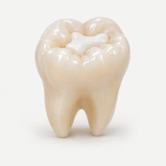
Estetik ve Kompozit Dolgu
Kompozit, diş renginde bir restorasyon malzemesidir. Çürük veya kırık nedeniyle kaybedilen diş dokusunun onarımında kullanılabilir. Dolgu seçimini kaybın yeri ve büyüklüğü etkiler.
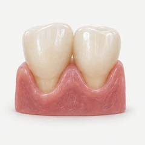
Diş Eti Çekilmesi
Diş eti çekilmesinde kök yüzeyi açığa çıkabilir ve hassasiyet oluşabilir. Diş eti hastalığı, fırçalama alışkanlıkları ve dişin konumu değerlendirmede ele alınır.
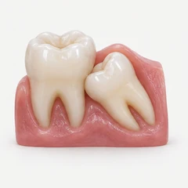
20 Yaş Dişi Çekimi
20 yaş dişinin durumu muayene ve gerektiğinde görüntülemeyle değerlendirilir. Çekim kararı dişin konumu, belirtiler ve komşu dokular üzerindeki etkisine göre verilir.
Bilgi metinleri ve dental model görselleri hekim onayına tabidir.
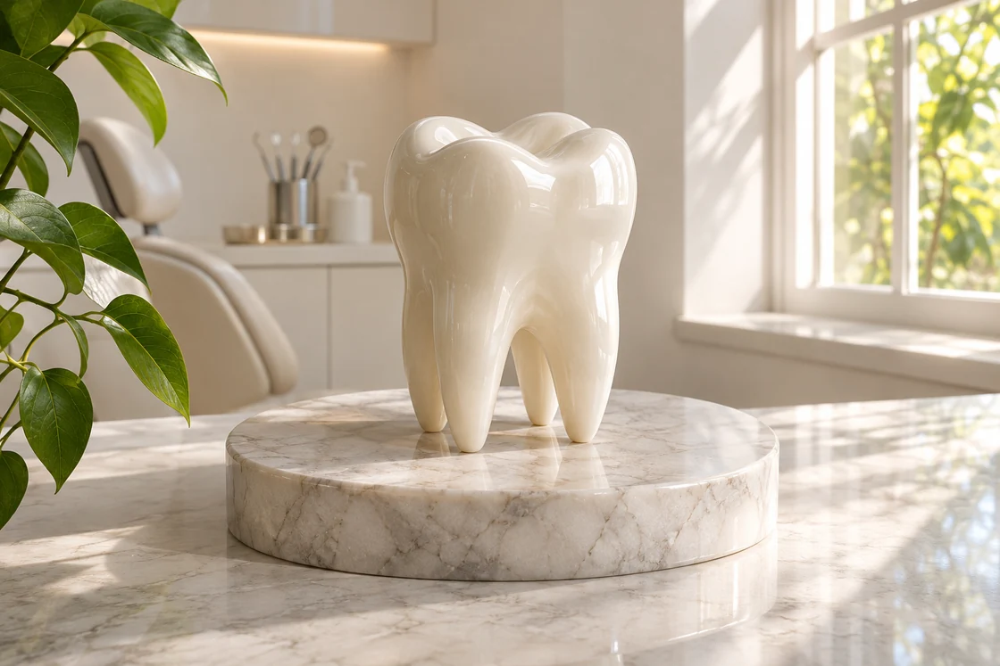
Klinik Hakkında
Diş Hekimi Kaan Kıray
Gaziantep’in Şahinbey ilçesinde ağız ve diş sağlığı alanında faaliyet göstermektedir.
- Koruyucu Diş Hekimliği
- Estetik Diş Hekimliği
- Restoratif Diş Hekimliği
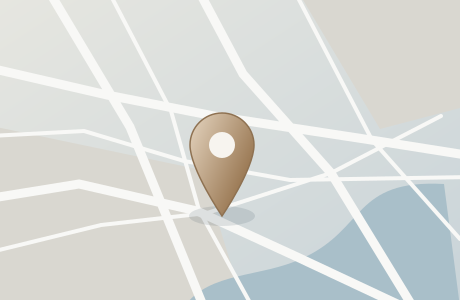
23 Nisan Mahallesi, Üniversite Bulvarı No:305B,
27410 Şahinbey / Gaziantep